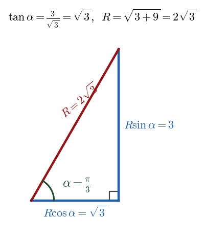

Harry → Phuc • 11 July 2026 tutorial
P3 WMA13/01 — Oct 2025 — Q4Q4 · \(R\sin(2x-\alpha)\) form, minimum of \(g(x)\) and smallest \(x\)

Right triangle for the \(R\)-form: \(R\cos\alpha=\sqrt{3}\), \(R\sin\alpha=3\Rightarrow \tan\alpha=\sqrt{3},\ \alpha=\tfrac{\pi}{3},\ R=2\sqrt{3}\).
Part (a) · Express as \(R\sin(2x-\alpha)\)[3]
Hide workingStrategy
Expand \(R\sin(2x-\alpha)\), match coefficients of \(\sin 2x\) and \(\cos 2x\), then get \(\alpha\) by dividing and \(R\) by squaring-and-adding (for exact values).
Formula · compound-angle expansion
\[ R\sin(2x-\alpha)=(R\cos\alpha)\sin 2x-(R\sin\alpha)\cos 2x. \]
Substitute · match coefficients
\[ R\cos\alpha=\sqrt{3},\qquad R\sin\alpha=3. \]
Working · \(\alpha\) by dividing
\[ \tan\alpha=\frac{R\sin\alpha}{R\cos\alpha}=\frac{3}{\sqrt{3}}=\sqrt{3} \;\Rightarrow\; \alpha=\frac{\pi}{3}\quad(0<\alpha<\tfrac{\pi}{2}). \]
Working · \(R\) by squaring and adding
\[ (R\cos\alpha)^{2}+(R\sin\alpha)^{2}=(\sqrt3)^{2}+3^{2}=12 \;\Rightarrow\; R^{2}(\cos^{2}\alpha+\sin^{2}\alpha)=12 \;\Rightarrow\; R=\sqrt{12}=2\sqrt{3}. \]
Result
\( f(x)=2\sqrt{3}\,\sin\!\left(2x-\tfrac{\pi}{3}\right) \)
Sense check
\(\cos^{2}\alpha+\sin^{2}\alpha=1\) removes \(\alpha\) from the \(R\) equation, so \(R\) is exact; \(\tan\tfrac{\pi}{3}=\sqrt3\) confirms \(\alpha\).
Phuc's slips (recorded): Phuc preferred to substitute a decimal \(\alpha\) to find \(R\). Harry: "your method could be quite dangerous… instead, take the two equations, square them and add them" — that always gives the exact \(R\). Phuc also mis-read his own "3" as "1", and reached for \(\sin^{-1}\); Harry: use \(\tan^{-1}\), calculator in radians.
Part (b)(i) · Exact minimum of \(g(x)\)[3 for (b)]
Carry-inFrom (a): \(f(x)=2\sqrt{3}\sin(2x-\tfrac{\pi}{3})\), so \(f(3x)=2\sqrt{3}\sin(6x-\tfrac{\pi}{3})\). Hence \(g(x)=\dfrac{18}{2\sqrt{3}\sin(6x-\frac{\pi}{3})+4\sqrt{3}}\).
Hide workingStrategy
The numerator \(18\) is fixed and positive, so \(g\) is
smallest when the denominator is
largest, i.e. when \(\sin(6x-\tfrac{\pi}{3})=1\).
Substitute the maximum of sine
\[ \text{max denominator}=2\sqrt{3}(1)+4\sqrt{3}=6\sqrt{3}, \qquad \min g=\frac{18}{6\sqrt{3}}=\frac{3}{\sqrt{3}}. \]
Working · rationalise
\[ \frac{3}{\sqrt{3}}\cdot\frac{\sqrt{3}}{\sqrt{3}}=\frac{3\sqrt{3}}{3}=\sqrt{3}. \]
Result
\( \min g(x)=\sqrt{3} \)
Sense check
\(\sin\le 1\) always, so the denominator can be no larger than \(6\sqrt3\); \(g\) can be no smaller than \(\sqrt3\).
Phuc did this well (recorded): Phuc identified that the minimum of the fraction occurs when the denominator (the sine term) is at its maximum, and rationalised \(\tfrac{3}{\sqrt3}\) to \(\sqrt3\) with Harry's prompting. Common trap: forgetting to rationalise and leaving a surd in the denominator.
Part (b)(ii) · Smallest \(x\) at the minimum[part of (b)]
Carry-inMinimum occurs when \(\sin(6x-\tfrac{\pi}{3})=1\).
Hide workingStrategy
Solve \(\sin(6x-\tfrac{\pi}{3})=1\) for the smallest \(x>0\); use the principal value first, then check for a smaller solution.
Working
\[ 6x-\frac{\pi}{3}=\frac{\pi}{2}\;\Rightarrow\; 6x=\frac{\pi}{2}+\frac{\pi}{3}=\frac{5\pi}{6}\;\Rightarrow\; x=\frac{5\pi}{36}. \]
Result
\( x=\dfrac{5\pi}{36} \)
Sense check
The general solution adds \(2n\pi\) to the angle; \(n=1\) gives \(x=\tfrac{17\pi}{36}>\tfrac{5\pi}{36}\), so \(\tfrac{5\pi}{36}\) is the smallest positive value.
Common trap (Harry flagged): for \(\sin=1\) the principal solution is unique in one period, so here there is no smaller \(\pi-\theta\) partner; but in other questions you must check the \(\pi-\theta\) solution before rearranging, to be sure you have the smallest \(x\).